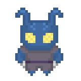

O Povo-Inseto, vive na cratera anti-magia onde antes existia Skigir, no polo norte.
Requisito: Povo Inseto
Benefício: Pode escolher uma evolução adicional
Especial: Esse talento pode ser escolhido várias vezes
Requisito: Povo Inseto, uma evolução com limite de usos por dia
Benefício: Você ganha 2 Usos adicionais da evolução escolhida
Especial: Esse talento pode ser escolhido várias vezes, seja para a mesma habilidade ou para evoluções diferentes
Requisito: Povo Inseto, qualquer evolução de psionismo
Benefício: Para cada evolução de psionismo, você recebe 3 pontos de poder
Especial: se este talento for escolhido mais de uma vez, para cada vez adicional, o povo inseto pode escolher um poder psionico, seu nivel de manifestador é igual a seu nivel de personagem -4, você pode escolher poderes do nivel máximo que você conseguiria manifestar naquele nivel. Escolha os poderes da lista do Psion